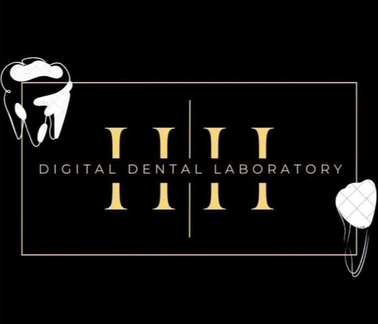
H&H Digital Dental Lab
Crown & Bridge • Digital Workflow
Crown & Bridge • Digital • Precision
Reduce Chairside Adjustments for Your Crown & Bridge Cases
In-house digital dental lab support that delivers predictable fits, better esthetics, and happier patients.
For dentists worldwide
- In-house production
- Better fit
- Clearer communication
Zirconia • E.max • Veneers • Implant Crowns
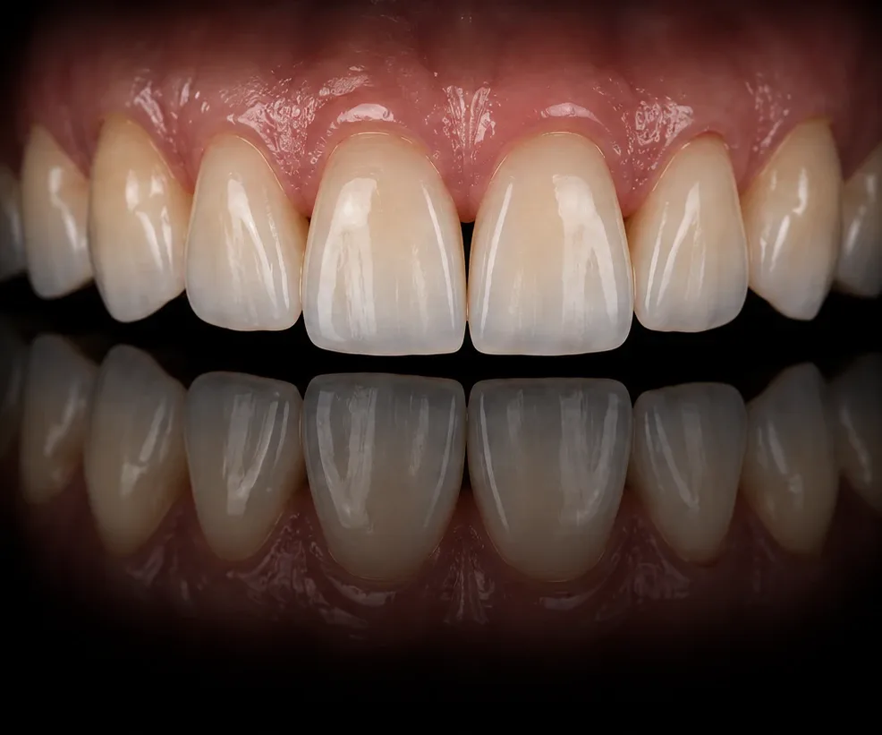
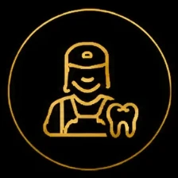
In-House Production- Colour Communication
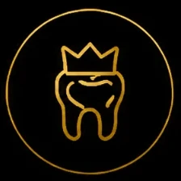
Crown & Bridge Focused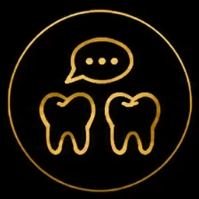
Case Discussion Before Milling
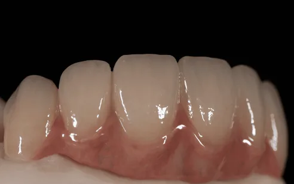
We help dentists reduce
Common Problems We Help Dentists Reduce
- Tight or open contact
- Shade mismatch discussion
- Heavy occlusion adjustment
- Repeated remakes due to unclear case information
- Unclear margin communication
- Lab work that needs too much chairside correction
Our services
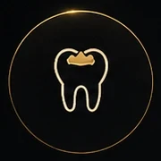
Zirconia Crowns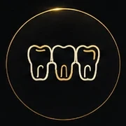
Zirconia Bridges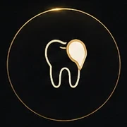
E.max / Lithium Disilicate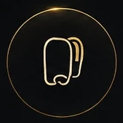
Veneers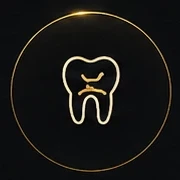
Inlays / Onlays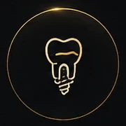
Implant Crowns- Digital Scan Cases
Our digital lab workflow
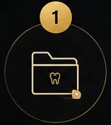
Case received from intraoral scan or model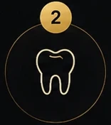
Margin, contact and occlusion checked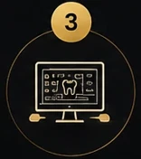
CAD design with case-by-case review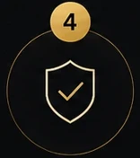
Internal quality control before delivery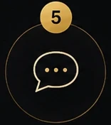
Feedback recorded to match each clinic's preference better
Loading 3D case…
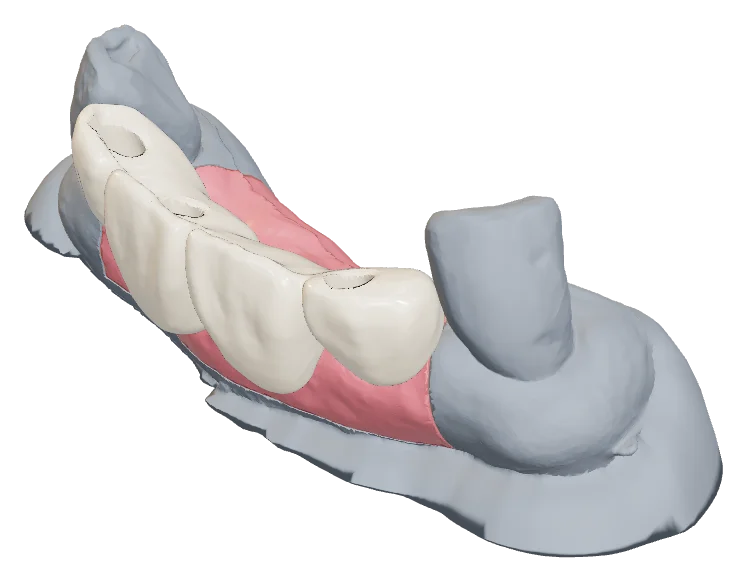
Real lab case
From model to seated bridge
Scroll to take it apart
Before delivery
Margin, contact and occlusion checked
Why clinics
work with us
- In-house production
- Crown & bridge focused
- Clear case communication
- Margin, contact and occlusion checked
- Feedback recorded for future cases
- Reliable support for digital workflow
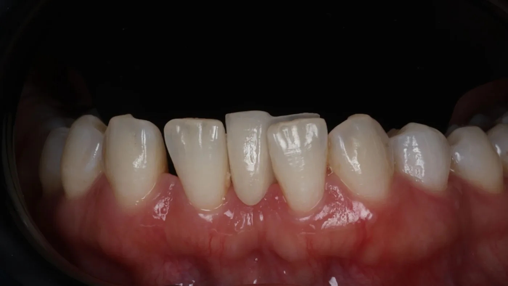
Ready to try one case first?
Send us a scan, model or case photo.
We can advise the suitable material, estimated turnaround time and price before you proceed.
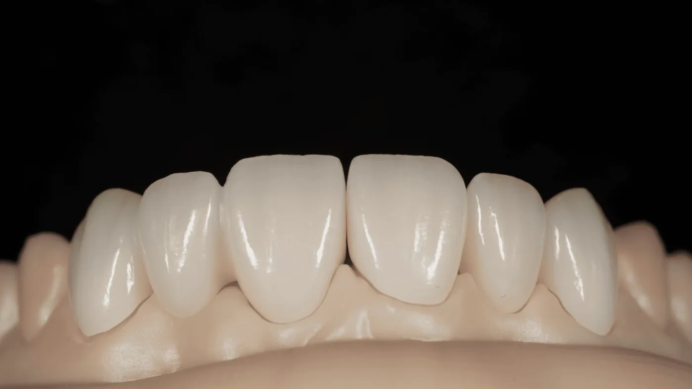
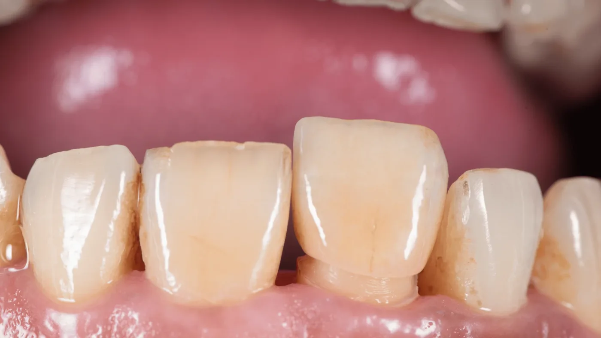
About us
About H&H Digital Dental Lab
Based in Johor Bahru, Malaysia, H&H Digital Dental Laboratory is led by certified dental technologists with more than 10 years of experience in the dental lab industry.
We focus on in-house crown and bridge restorations, including zirconia, E.max, veneers, inlays/onlays and implant crowns, with digital workflow and quality control to support more consistent clinical results.